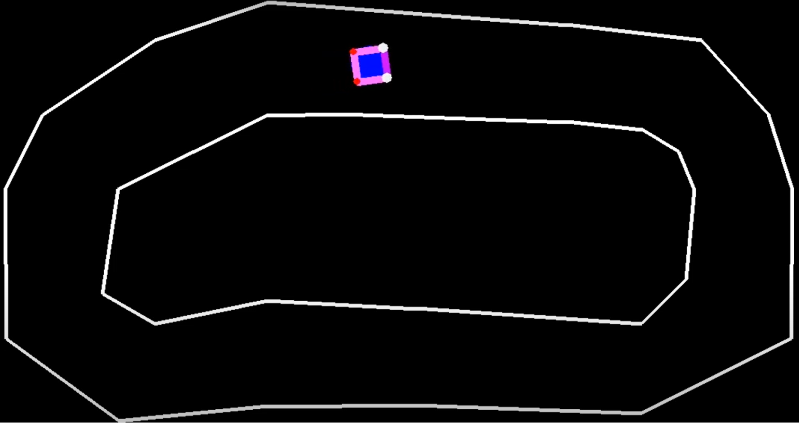

Q-LEARNING POWERED DRIVER

This personal project was my first introduction machine learning algorithms
and introduced me into several approaches behind the reinforcement learning paradigm.
Ultimately, I developed my understanding on Q-Learning algorithms (a relatively primitive
state of reinforcement learning) and the driving mechanics behind how the algorithm
works: particularly the Markov Decision Process, Bellman Equation and Q-Learning equation. This also gave me
a fundemental concept of the trade-offs within this approach and optimisation of parameters
to suit an algorithms best environment for learning.
Through this project, I have learnt fundementals of this approach to machine learning
whilst enhancing my skills at python. I had to design the game to suit the
ML algorithm/agent, which required me to program relatively complicated mathematical algorithms.
You may find the code for my program here!
Here is a video of my code in action!
UNIVERSITY PROJECT: food finder
This group project involved working within a small group to develop a website
that was linked to an online database. Crucially, this project helped me understand
and utilise gitlab which enabled concurrent working on the project with my groupmates.
It involved several dynamic
components making me proficient at: HTML, JS, CSS, Python (Flask), SQL and GitLab
Unfortunately, this project is no longer available to be viewed by public